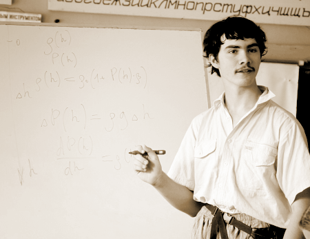
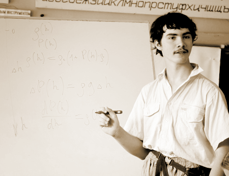

- лэш
 поступление
поступление- задачи школы
- олимпиады

Поступление на ЛЭШ
Способы поступления на отделения Школы несколько отличаются, но как правило, это собеседование с преподавателями отделения.
поступлениезадачи школыолимпиадыСпособы поступления на отделения Школы несколько отличаются, но как правило, это собеседование с преподавателями отделения.
